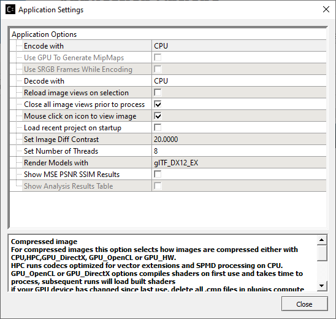
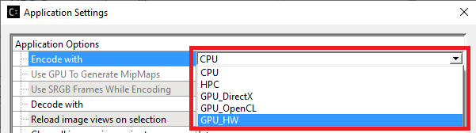

Application Options¶
Various default application behaviors can be set using the Application Settings window. Select from the application tool bar or from the Settings – Set Application Options menu

Application Settings Window
Encode with¶
For compressed images, this option selects how images are compressed either with CPU, HPC, or with GPU using shaders for OpenCL (OCL), DirectX Compute (DXC), or Graphics Hardware Extension (GPU). these options can be selected from the GUI using “Encode With” HPC runs codecs optimized for vector extensions and SPMD processing on CPU.
Note Only BC1 to BC7 format is supported with HPC Compress, if you choose another format under HPC Compress, they will be compressed with generalized CPU instructions See the latest release notes for details on what GPU codecs are available for encoding.
Graphics Hardware Extension (GPU) is set for BCn codecs.

Decode with¶
This option is a drop-down combo list where users can choose to decode the image with CPU, GPU_OpenGL, GPU_DirectX, or GPU_Vulkan. It is used when users click to view an image on the Image View window.
Reload Image Views on Selection¶
This option when set will always close the current image view and open a new image view. This is useful when an image has been processed to say a new compression format and changed visually from when it was last viewed. By default, this is turned on (check-marked). If you turn this option off then the view will not be refreshed every time you click on viewing an image from Project Explorer. The advantage of switching this mode is that for large compressed images the image view takes considerable time to decompress and not necessary if the compressed file content has not changed.
Close all Image Views Prior to Process¶
This option when set will close all Image Views in the application, before processing selected image destination settings in the Project Explorer. This will free up system memory, to avoid out of memory issues when processing large files.
Mouse click on icon to view image¶
This option is checked by default. When checked, the application will load the image/model onto the Image View window when the user clicks on the icon next to the image file node in Project Explorer. When it is unchecked (off), the application will load the image/model onto the Image View window when the user clicks on the image filename or icon.
Load Recent Project on Startup¶
This option off by default will load the last project you worked on. This saves you time selecting it from the welcome page or the recent files list from the file menu.
Set Image Diff Contrast¶
Sets the contrast of pixels for image view diff, using 1.0 returns pixels to original diff contrast, min is 1 max is 200
Set Number of Threads¶
Sets the number of threads to use for texture compression, max is 128 threads distributed over multiple cores Default 0 sets auto-detection, where the total threads = number of processor cores, if auto-detection fails default = 8
When selecting this option users can also view what the host processor has available and is shown in square brackets as illustrated below:
Max number of processors [8]
The GUI application must be restarted in order for the new settings to take effect
Render Models with¶
Selects how to render 3D Model files using OpenGL for Obj and DirectX or Vulkan for GLTF files.
Show MSE PSNR SSIM Results¶
The output windows will display these values after processing a image, when all processing is done an average summary of all of the results will be displayed.
Show Analysis Results Table¶
Shows all Process Times, PSNR and SSIM results for compressed images in a table view.